GPU decoding
- Header
geozl/gpu.h, part of the supported source API since 0.30.0, with one API for every GPU backend and its prototypes in the C API.
A training batch lives on the GPU. The usual path decodes tiles on the CPU, cuts the windows, stacks them and copies the batch over, and the CPU never looks at those decoded bytes again. GeoZL's GPU API skips that. You hand it compressed frames and say where each window goes in a device buffer. Frames that can decode on the GPU expand there and never touch host memory. The rest decode on the CPU and are copied up.
Who calls it
The API is C only, in geozl/gpu.h, and that is deliberate. The Python, R, Julia and JavaScript bindings decode on the CPU. A library that wants tensors on a GPU binds these calls itself. Rumi does, to fill training batches from .rumi files. Its rumi_read_gpu and rumi_read_many_gpu wrap them.
Device types use the DLPack numbers, 2 for CUDA and 8 for Metal, so a tensor's device passes straight through. Device memory is a pointer-sized handle, a CUdeviceptr or an id<MTLBuffer>. geozl_gpu_available says whether the build supports a device type.
The example reads four 256 by 256 tiles of 16-bit samples and puts a 128 by 128 window of each, at row 64 and column 32, into a 4 by 128 by 128 tensor.
A decoder you make once
Create one GeozlGpu and keep it. It holds the device, the loaded kernels, pinned staging and some device scratch. Creating it opens the device and loads the place kernel, so a missing driver fails before training starts. The PFOR and PivCo kernels load the first time a batch needs them.
char error[512];
// deviceType and deviceId come from the tensor's DLPack device
GeozlGpu *gpu = geozl_gpu_create(deviceType, deviceId, 4, 64 << 20, 1,
error, sizeof error);
if (gpu == NULL) {
fprintf(stderr, "%s\n", error);
return 1;
}threads caps the CPU threads one decode uses. Even GPU frames are parsed and planned on the CPU, and the threads share the frames of a batch, so more threads help when a batch has many frames. 0 means one. maxDecodedBytes caps the decoded bytes of one call and is checked before any memory is reserved. Our four tiles decode to 512 KiB, so 64 MiB leaves room. verifyChecksums is covered at the end.
Every call that can fail takes an error buffer and its size, returns 0 or a non-NULL pointer on success, and writes a short message on failure. A decoder serves one call at a time, so give each decoding thread its own.
Frames, copies and the target
A call takes frames, copies and a target. A GeozlGpuFrame is the compressed bytes plus the exact size they decode to, which comes from your own metadata before anything is parsed.
enum { TILES = 4, TILE = 256, WINDOW = 128, SAMPLE = 2 };
GeozlGpuFrame frames[TILES];
for (size_t i = 0; i < TILES; ++i)
frames[i] = (GeozlGpuFrame){data[i], size[i], TILE * TILE * SAMPLE};A GeozlGpuCopy moves a window of rows by width samples from one decoded frame into the target. Each side has a start, a row stride and a step between samples, all in bytes. Our window starts at row 64, column 32 of a 256-sample row, so source is (64 * 256 + 32) * 2 = 32832 and a tile row is 512 bytes. In the target, window i starts at i * 32768 and its rows are 256 bytes.
GeozlGpuCopy copies[TILES];
for (size_t i = 0; i < TILES; ++i)
copies[i] = (GeozlGpuCopy){
.frame = i,
.source = (64 * TILE + 32) * SAMPLE, // row 64, column 32
.sourceRow = TILE * SAMPLE, // 512 bytes per tile row
.sourceStep = SAMPLE,
.destination = i * WINDOW * WINDOW * SAMPLE,
.destinationRow = WINDOW * SAMPLE, // 256 bytes per window row
.destinationStep = SAMPLE,
.width = WINDOW,
.rows = WINDOW,
};
source and sourceRow describe where the window sits in the decoded frame. destination and destinationRow describe where it goes in the batch.The steps give other layouts for free. If the four frames were four bands of one window and the model wanted channels last, band b would start at destination = b * 2, with destinationStep = 8 and destinationRow = 1024. The same fields put tiles side by side in a mosaic or take every other column.
Copies run in parallel, so no two may write the same target sample. The decoder does not check that, as gpu.h says. It does reject a copy that reaches outside its frame or the target.
A GeozlGpuTarget holds the device memory, an offset, the writable bytes and a stream. The memory can be a buffer your framework owns. Pass the framework's stream and the decode joins its queue, so the next kernel runs once the samples land, with no wait on the host. NULL is the default stream, and Metal ignores the field.
GeozlGpuTarget target = {
.memory = (void *)(uintptr_t)batch, // the tensor's device handle
.offset = 0,
.bytes = TILES * WINDOW * WINDOW * SAMPLE,
.stream = stream, // the framework's stream, or NULL
};sampleBytes is the width of a target sample, 1, 2, 4, 8 or 16 bytes, and elementBytes is the width of the values in each frame. elementBytes must divide sampleBytes, so a frame that stores 16-bit samples as plain bytes decodes with 1 into 2. Here both are 2.
if (geozl_gpu_decode(gpu, frames, TILES, copies, TILES, SAMPLE, SAMPLE,
&target, NULL, error, sizeof error) != 0)
fprintf(stderr, "decode failed: %s\n", error);What runs on the GPU
Any GeoZL frame works, and each frame is routed on its own. A frame decodes on the GPU when its last codec is pfor or lanes, it has one chunk, and its elements are the 1- or 2-byte target samples. As recipes, that is id>pfor, planar>zigzag>pfor, id>lanes and planar>zigzag>lanes. The CPU still reads the frame with OpenZL and captures the payload before the last codec expands it. The expansion, any planar and zigzag step and the copies run on the GPU.
Everything else decodes on the CPU and goes up through the same copies. That covers zstd and the other entropy graphs, NoData, quantized and raw frames, frames with more than one chunk, and multi-plane planar>zigzag>lanes frames whose planes are shorter than 256 samples.

So write frames with pfor or lanes recipes if you read them on a GPU. forceHost takes one byte per frame, and a nonzero byte sends that frame to the CPU. NULL leaves the routing automatic. GPU-friendly codecs explains why only PFOR and PivCo suit a GPU, and From compressed bytes to a GPU tensor shows the kernels.
When the work is done
On CUDA, geozl_gpu_decode returns once the work is queued on the target's stream. On Metal it returns when the work is done. Code that synchronizes before it reads or frees the target works on both.
Queuing lets the CPU prepare the next batch while the GPU decodes this one. The decoder keeps two staging areas, so a call waits only for the call two back on the same stream. A device error, such as a malformed planar>zigzag>pfor block, can therefore come back from a later call or from geozl_gpu_synchronize on CUDA. On Metal the same call reports it.

geozl_gpu_synchronize returns, the target may be freed or reused.Keep the target and the stream alive until the work finishes. Later work on the same stream can read the target, because the stream orders it. geozl_gpu_synchronize waits and returns any error.
if (geozl_gpu_synchronize(gpu, error, sizeof error) != 0)
fprintf(stderr, "decode failed: %s\n", error);Changing the stream, synchronizing and destroying all wait for work in flight, so geozl_gpu_destroy is safe once no other call is running.
Memory and checksums
Most callers decode into memory their framework owns. For tests and small tools, geozl_gpu_alloc allocates a target on the decoder's device, geozl_gpu_pointer gives the handle for GeozlGpuTarget.memory, and geozl_gpu_free releases it. Synchronize before freeing.
GeozlGpuMemory *memory =
geozl_gpu_alloc(gpu, TILES * WINDOW * WINDOW * SAMPLE, error, sizeof error);
GeozlGpuTarget target = {geozl_gpu_pointer(memory), 0,
TILES * WINDOW * WINDOW * SAMPLE, NULL};
/* decode, synchronize, read */
geozl_gpu_free(memory);
geozl_gpu_destroy(gpu);An OpenZL frame can carry two checksums, one over the compressed bytes and one over the decoded content. With verifyChecksums on, host frames check both. GPU frames check only the compressed one, on the CPU, because their decoded samples never come back to the host. That still catches a corrupt or truncated file, so leave it on for frames from outside the process.